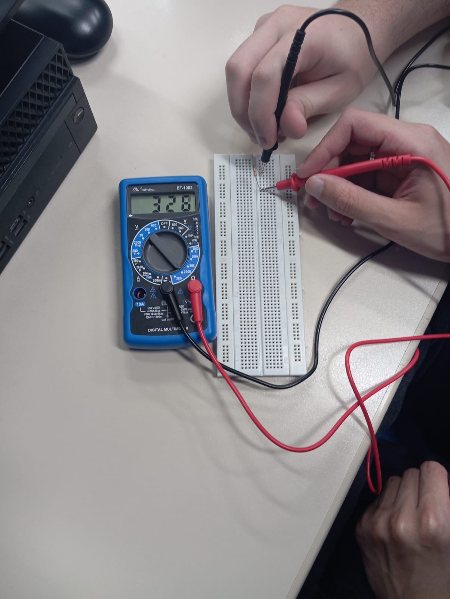
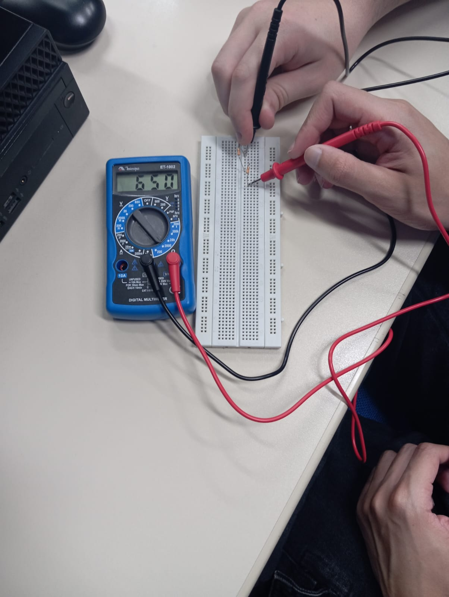
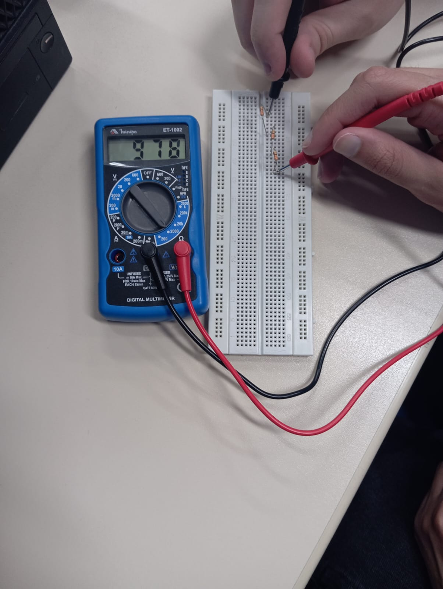
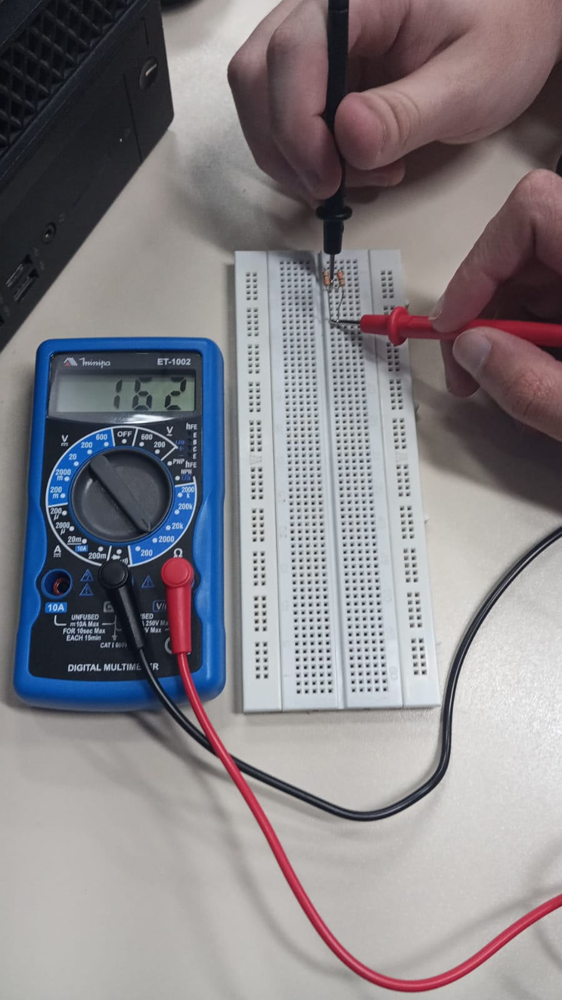
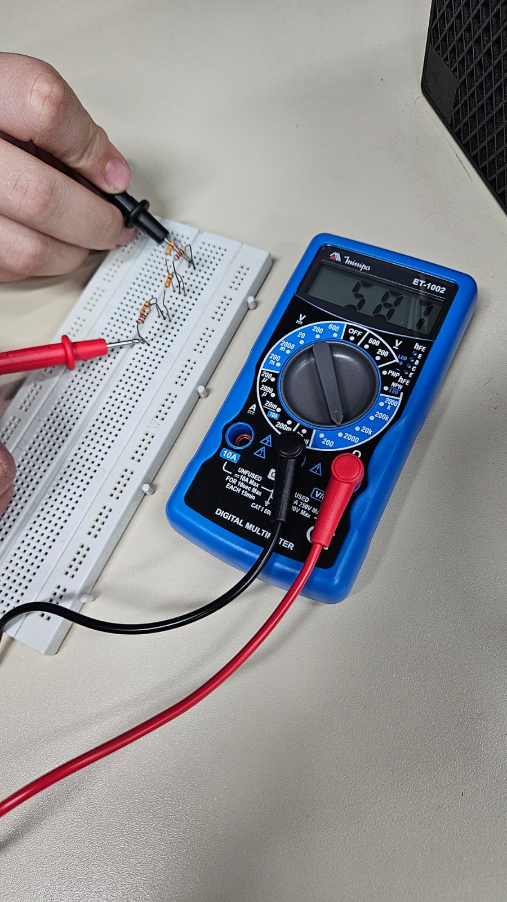

Associação em série
É quando os resistores estão no mesmo fio em um circuito.
Experimento 1
Medição de resistência de um resistor de 330 ohms
Fonte: O autor
Experimento 2
Medição de resistência de dois resistores em série de 330 ohms
Fonte: O autor
Experimento 3
Medição de resistência de três resistores em série de 330 ohms
Fonte: O autor
Associação paralela
É quando os resistores estão em diferentes fios em um circuito.
Experimento 1
Medição de resistência de DOIS resistores em paralelo de 330 ohms
Fonte: O autor
Experimento 2
Medição de resistência de TRÊS resistores em paralelo de 330
Fonte: O autor
Associação mista
É quando é utilizado a associação simples e paralelo dos resistores em um mesmo circuito.
Experimento
Medição de resistência de associação mista de resistores de 330 ohms e 220 ohms
Fonte: O autor